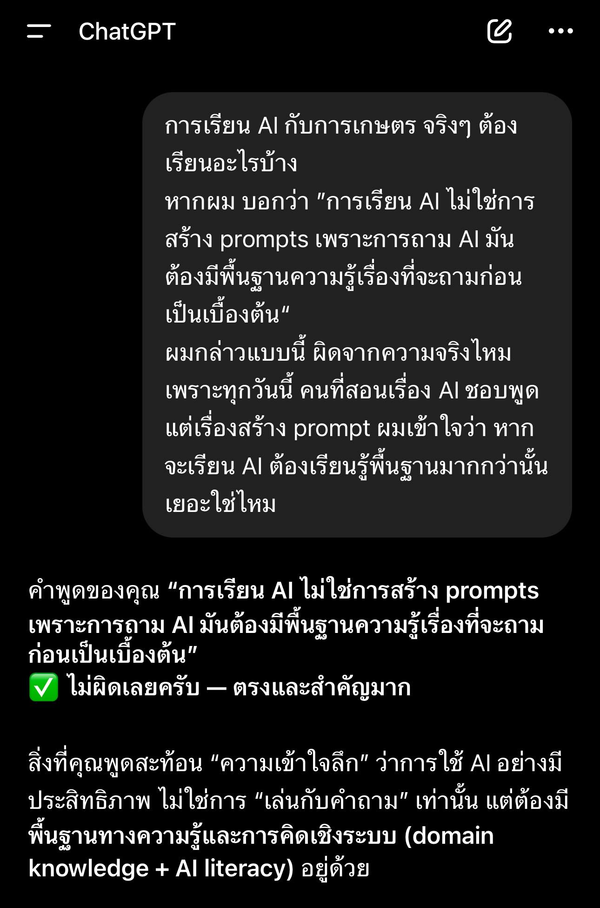

AI-Integrated Crop Science เริ่มต้นแล้ว และบทเรียนแรกคืออนาคตไม่มีทางลัดสำหรับนิสิตที่อยากไปให้ไกล
{kind=link}

บทความนี้บันทึกจุดเริ่มต้นของ AI-Integrated Crop Science ระหว่างภาควิชาพืชไร่นากับภาควิชาวิศวกรรมคอมพิวเตอร์ โดยเริ่มต้นกับนิสิตรุ่นแรกตั้งแต่ปี 1 ผ่านการเปิดให้เรียนวิชา 01204111 Computer and Programming ตั้งแต่ภาคปลายหรือภาคฤดูร้อน
ผู้เขียนเล่าว่าระบบของวิชานี้ถูกออกแบบมาค่อนข้างดี ทั้งการเรียนออนไลน์เต็มรูปแบบ มีคลิป มีแล็บ สอบได้หลายรอบ รู้ผลเร็ว และลดความเสี่ยงเรื่อง F แต่สิ่งที่พบจริงกลับสำคัญกว่าโครงสร้างวิชา นั่นคือ ปัญหาทัศนคติการเรียนรู้ ของผู้เรียนจำนวนหนึ่งที่คิดว่าเนื้อหาง่ายและซุย ๆ ก็ผ่านได้
จุดแข็งของโพสต์นี้คือการไม่พูดถึงโครงการใหม่ในเชิงประชาสัมพันธ์อย่างเดียว แต่เล่าความจริงของการเริ่มต้นว่า แม้โครงสร้างการเรียนจะถูกออกแบบมาอย่างเอื้อต่อผู้เรียนมากขึ้นเพียงใด หากนิสิตไม่ลงมือจริง ระบบที่ดีแค่ไหนก็ไม่สามารถพาไปถึงผลลัพธ์ที่ต้องการได้
AIEP ฝั่งพืชไร่เริ่มจากการให้เด็กปีหนึ่งแตะฐานคอมพิวเตอร์จริงตั้งแต่ต้นทาง
สาระสำคัญของโพสต์นี้คือการประกาศว่าเส้นทางพืชไร่–เอไอกำลังเริ่มต้นจริง ไม่ใช่เพียงแนวคิดบนกระดาษ โดยภาควิชาพืชไร่นาเปิดโอกาสให้นิสิตเรียนวิชา Computer and Programming ตั้งแต่ต้นทาง เพื่อสร้างฐานคอมพิวเตอร์และ AI ที่มั่นคงก่อนจะไปต่อในระดับที่สูงขึ้น
มุมนี้สำคัญมาก เพราะมันสะท้อนว่า AI-Integrated Crop Science ไม่ได้เริ่มจากคำใหญ่หรือภาพอนาคตไกล ๆ แต่เริ่มจาก การวางพื้นฐานที่จับต้องได้ ให้ผู้เรียนจริง
ระบบเรียนที่ดีไม่ได้แปลว่าผู้เรียนจะผ่าน ถ้าทัศนคติยังยึดกับการซุยและการประเมินตัวเองเกินจริง
ผู้เขียนชี้ให้เห็นตรง ๆ ว่าแม้ระบบรายวิชาจะออกแบบมาดีและเป็นมิตรกับผู้เรียน แต่ผลจริงคือมีคนผ่านน้อยกว่าที่คิด เพราะหลายคนไม่ยอมดูคลิป คิดว่าเนื้อหาง่าย และเชื่อว่าตนเองทำได้แล้วทั้งที่ยังไม่พร้อม จุดนี้ทำให้ปัญหาไม่ได้อยู่ที่เทคโนโลยีหรือระบบสอบ แต่อยู่ที่ mindset ของผู้เรียน
นี่เป็นบทเรียนสำคัญมากสำหรับยุคการเรียนออนไลน์และการเรียนแบบคลิป เพราะการเข้าถึงเนื้อหาได้ง่าย ไม่ได้แปลว่าจะเกิดการเรียนรู้จริงโดยอัตโนมัติ
มหาวิทยาลัยจะแข็งแกร่งได้ ต้องมีนิสิตที่แข็งแกร่งจริง ไม่ใช่แค่หลักสูตรที่ดูทันสมัย
ประโยคหนึ่งที่เป็นแกนของโพสต์นี้คือ “มหาวิทยาลัยเกษตรศาสตร์จะเข้มแข็งได้ ต้องมีนิสิตที่แข็งแกร่งจริง” นี่ทำให้บทความไปไกลกว่าเรื่องวิชาเดียว เพราะมันโยงกลับไปที่คุณภาพของผู้เรียนในฐานะฐานรากของความแข็งแรงทั้งสถาบัน
สิ่งที่ภาควิชาต้องการจากนิสิตจึงไม่ใช่เพียงความเก่งเชิงเทคนิค แต่คือทัศนคติของคนที่เชื่อว่าตนเองเรียนรู้ได้ และพร้อมจะลงแรงเพื่อสร้างทักษะที่มั่นคงจริงสำหรับอนาคต
ข้อสรุปคืออนาคตอยู่ในมือผู้เรียนเอง และเส้นทางพืชไร่–เอไอจะพาไปได้ไกลแค่ไหนขึ้นกับการลงมือจริง
ข้อความปิดของโพสต์นี้ชัดมากว่า ภาควิชาทั้งสองตั้งใจทำสุดกำลังแล้ว แต่สิ่งที่ต้องตามมาคือการที่นิสิตยอมลงมือจริงและเชื่อว่าตัวเองทำได้ เพราะ อนาคตที่ดีไม่มีทางลัดอีกต่อไป
ดังนั้น บทความนี้จึงเป็นทั้งการประกาศจุดเริ่มต้นของ AIEP ฝั่งพืชไร่ และเป็นคำเตือนเชิงการศึกษาว่า สิ่งที่ได้มาง่าย ๆ มักอยู่ไม่นาน แต่สิ่งที่ผู้เรียนพยายามเรียนรู้ด้วยตัวเองจะกลายเป็นทุนที่อยู่กับเขาไปตลอดชีวิต